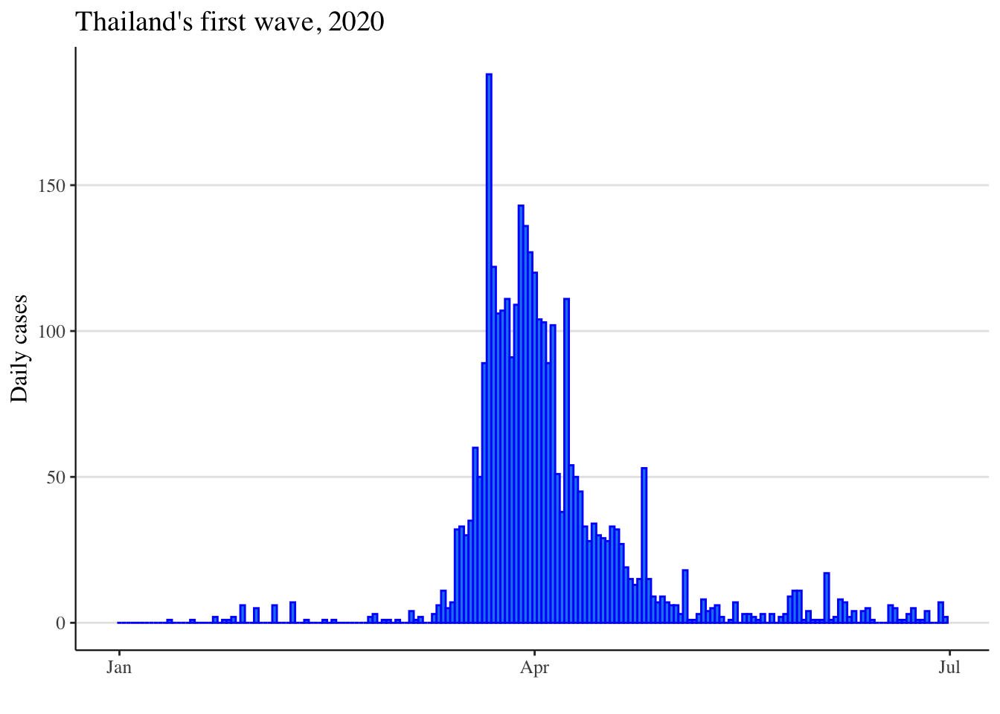
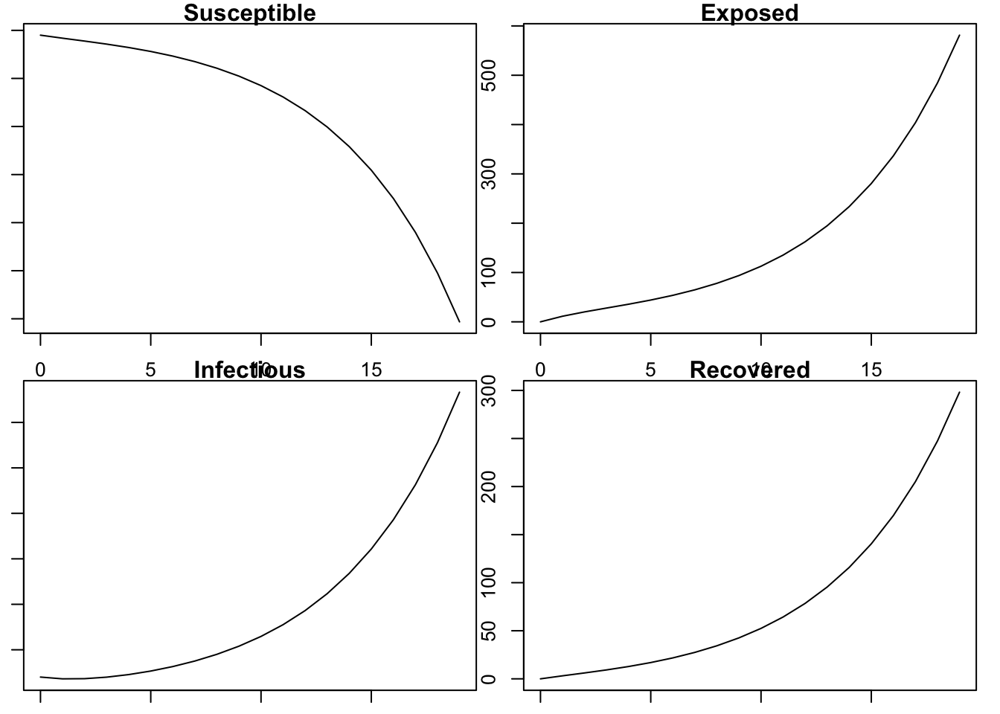
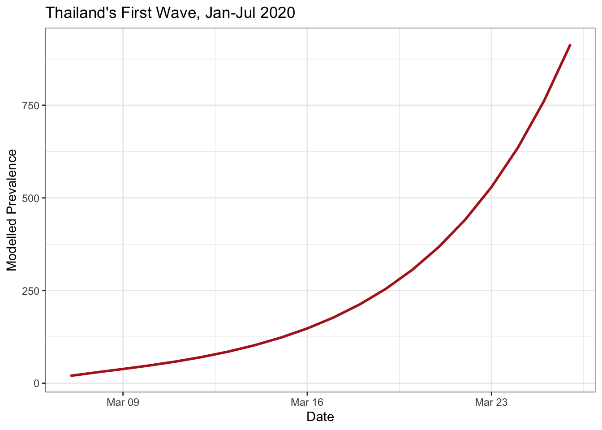
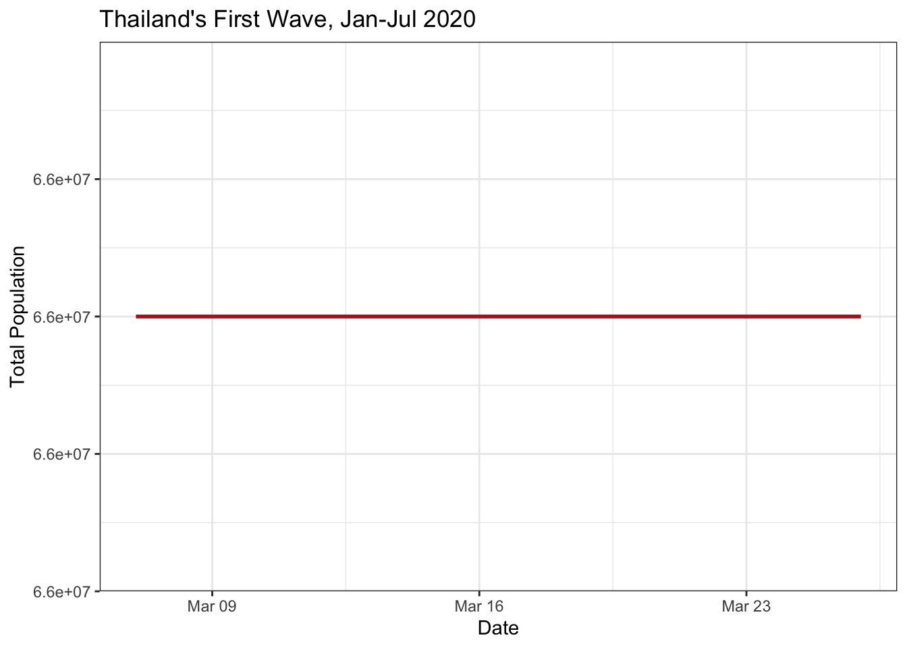
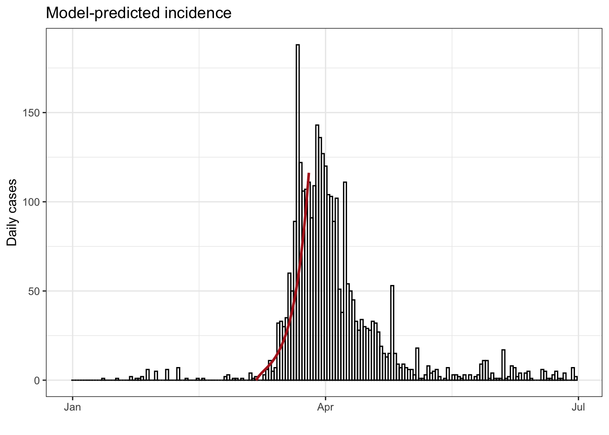
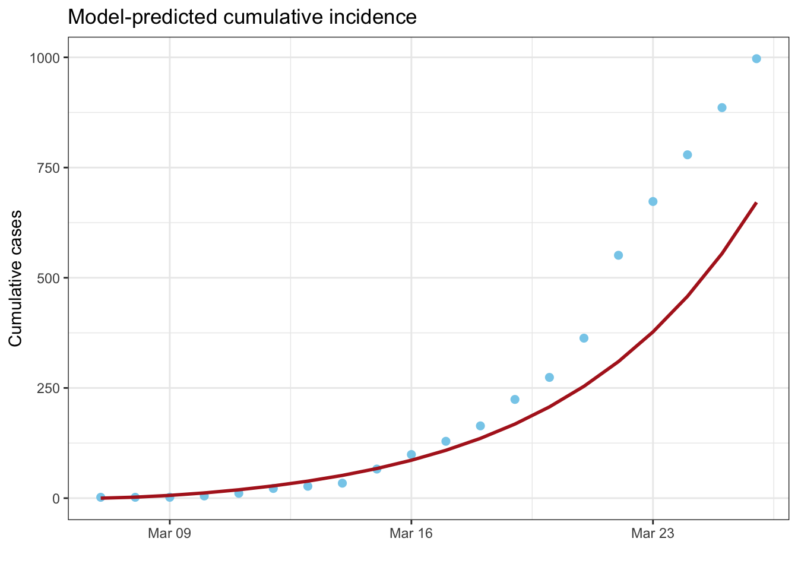

# SPARKLE Modelling Short course
# 2025 Infectious Diseases Modelling
#########################################
## Modelling a COVID outbreak ##
#########################################
# A model for COVID-19
# Some R code to numerically solve a set of ordinary differential equations
# and then plot the resultsModelling an outbreak - COVID-19 in Thailand
SPARKLE short course ‘Mathematical Modelling of Infectious Diseases’
Presenter: Emma McBryde, Australian Institute of Tropical Health & Medicine, James Cook University
Overview of days 3 and 4 of this workshop
Over the next 3 sessions we are going to explore an example modelling process, where an outbreak has occurred with set interventions. The aim of our modelling is to explore the impact of the interventions that were conducted, and part of that means exploring the counterfactuals (what might have happened if there were no interventions).
The example modelling process we will undertake to achieve this aim is:
- Design a simple transmission model that captures the disease progression within the population.
- Fit the model to data.
- Model the interventions and update the model fit. Explore the impact of the interventions and the counterfactuals.
In the last session, we will explore how to build a transmission model for vector borne diseases.
Session Summary
A practical session where the students use a worked example to learn how a compartmental SEIRS model is written in the R programming language. Meaningful model output will be derived and plotted. We will use a COVID-19 outbreak in Thailand as an example.
We will write some R code for our COVID-19 model. The code for a compartmental model will require several sections:
Part 1 covers:
- Code summary
- Set working directory
- Keep track of dependencies
- Set the start and end time for the model simulation
- Examine the dataset
Part 2 covers:
- Define the model parameters
- Set up the initial conditions
- Define the model compartments
- Set up a function to solve the equations
- Run and plot the model
Part 3 covers:
- Post-process the model output to predict standard epidemiological metrics
- Plot useful outputs
We recommend to save your text at the end of each part by printing the file.
Prerequisites and Data in R
Code summary
It is good practice to write a short description of your code to summarise its purpose for future users. Below is an example of such a description. Open R studio, create a new file and copy and paste the code chunk below into your editor to start writing your own code:
Save this file in your student_materials folder, and give it a meaningful name, like session_seir_ode_covid.
Set working directory
You must let R know the location of any files you plan to import, so remember to set your working directory. Copy and paste the code chunk below into your editor to continue writing your code:
# Windows
# setwd('your_path_goes_here')
# setwd('your_path_goes_here')
# Mac OSX
# setwd("./workshop")You can also set the working directory by tabbing: Session/Set Working Directory/To Source Location
Keep track of dependencies through library loading and importing data
List all the packages you plan to use and the files you plan to import in one place at the beginning. Copy and paste the code chunk below into your editor to continue writing your code:
# Library imports
library(dplyr)
library(deSolve)
library(ggplot2)Now we load the data, and take a quick look:
# Data imports
first_wave <- read.csv("first_wave_TH.csv", colClasses = c("Date", "numeric", "numeric"))
# Convert dates
first_wave$Date <- as.Date(first_wave$Date, format = "%Y-%m-%d")
summary(first_wave) Date Cases Cumulative_cases
Min. :2020-01-01 Min. : 0.00 Min. : 0
1st Qu.:2020-02-15 1st Qu.: 0.00 1st Qu.: 34
Median :2020-03-31 Median : 2.00 Median :1711
Mean :2020-03-31 Mean : 17.42 Mean :1535
3rd Qu.:2020-05-15 3rd Qu.: 11.00 3rd Qu.:3025
Max. :2020-06-30 Max. :188.00 Max. :3171 # plot Incidence
ggplot(first_wave) +
geom_col(aes(x=Date, y=Cases), width=1, fill="dodgerblue2", colour="blue") +
ylab("Daily cases") +
xlab("") +
ggtitle("Thailand's first wave, 2020") +
theme(panel.background = element_rect(fill = "white", colour = "white"),
panel.grid.major = element_line(colour = "grey90"),
panel.grid.major.x = element_blank(),
axis.line = element_line(size = 0.4, colour = "grey10"),
text = element_text(size=12, family="serif"),
legend.key = element_rect(fill = "white", colour = "white"),
legend.position = "top",
strip.background =element_rect(fill="royalblue"),
strip.text = element_text(size = 10, colour = 'white'))Warning: The `size` argument of `element_line()` is deprecated as of ggplot2 3.4.0.
ℹ Please use the `linewidth` argument instead.
Writing model code in R
Define the model parameters
All our parameters have to go in a single structure, either a vector or a list. Today, we’ll use a named vector
parameters <- c(
R0 = 4,
latent_period = 5,
infectious_period = 6
)The parameters for the model are frequently estimated either from literature or from the data given the model and other parameters of the model (stay tuned for more on this). The flows are often represented by some Greek symbols, but it is often better to have more meaningful names as we have done here.
Complete the following table using information about the natural history of COVID-19 infection:
| Parameter | Flow transformation | Value/Range | Units |
|---|---|---|---|
| Basic reproduction number | |||
| Latent period | |||
| Duration of infection | |||
| Duration of immunity |
Type parameters in your console. What do you see?
Type parameters["R0"] into your console. What does this value mean?
Tip
If this isn’t working, try manually typing in the quotation marks and make sure it’s a zero after R.
Set up the initial conditions and model variables
Copy and paste the chunk below into your script to continue model development:
# Initial conditions
Total_population <- 6.6e7
Initial_exposed <- 0
Initial_infected <- 20
Initial_recovered <- 0
Initial_susceptible <- Total_population - Initial_exposed - Initial_infected - Initial_recovered
# Compartments
state <- c(
Susceptible = Initial_susceptible,
Exposed = Initial_exposed,
Infectious = Initial_infected,
Recovered = Initial_recovered
)Here “state” refers to the population state, and how many are in which compartment at the initial time.
We also need to define the start and end time for the model simulation:
# Time window
start_date <- as.Date("2020-03-07")
end_date <- as.Date("2020-03-26")
times <- seq(start_date, end_date, by = 1)Setting up the function to solve equations
We can write functions to evaluate our system of equations, which we will need to use for the ODE solver. The SEIR model we’re going to use here is more complicated than we’ve seen, but work through it slowly and make sure it all makes sense.
# Model function
COVID.base <- function(t, state, parameters) {
with(as.list(c(state, parameters)), {
# Calculate the total population size
Total_population <- Susceptible + Exposed + Infectious + Recovered
# Calculate the average force of infection imposed on each susceptible individual
force_of_infection <- R0 * Infectious / (Total_population * infectious_period) # i.e. the infection rate
# Calculate the net (instantaneous) change in each state variable
Susceptible_change <- -force_of_infection * Susceptible # dS/dt
Exposed_change <- force_of_infection * Susceptible - Exposed / latent_period # dE/dt
Infectious_change <- Exposed / latent_period - Infectious / infectious_period # dI/dt
Recovered_change <- Infectious / infectious_period # dR/dt
# Return net changes as list
return(list(
c(
Susceptible_change,
Exposed_change,
Infectious_change,
Recovered_change
)
))
})
}What is the name of our function and what are the inputs and outputs?
What is the rate of movement out of state E?
What is the rate of movement out of state I?
What is the formula for \(\lambda\), the infection rate also known as the force of infection?
Explain the different components of the force of infection.
Run and plot the model
Copy the following chunk into your script to solve the ODE
# Solve model
out <- ode(y = state, times = as.numeric(times - times[1]), func = COVID.base, parms = parameters)
# Plot solution
par(mar = c(1, 1, 1, 1)) # reduce the margins of the plot in order to fit it in the panel
plot(out)
Define incidence and prevalence, and discuss the differences between them. Which might policy makers prefer and why?
Explain how each of the variables S, E, I and R can be measured in the field.
Data processing and plotting
Post-process the model output to predict standard epidemiological metrics
This is great, but the output from ode can be a bit unwieldy. Let’s write a function that can clean it up for us.
tidy_base_model <- function(ode_output, times, parameters) {
as.data.frame(ode_output) %>%
mutate(
Prevalence = Exposed + Infectious,
Incidence = Exposed / parameters["latent_period"],
Cumulative_incidence = cumsum(Incidence),
Population = Susceptible + Exposed + Infectious + Recovered,
Date = times
)
}
tidied_output <- tidy_base_model(out, times, parameters)What is the formula for incidence? Why is that?
Write down an equation for prevalence and the corresponding R code. Is this the correct formula? Why or why not?
Why do we choose to plot incidence?
Plot the total population size, and predicted prevalence and incidence
It’s time to plot our solution, and make sure we haven’t made any silly mistakes (a reality check!).
ggplot() +
geom_line(aes(x = Date, y = Prevalence), data = tidied_output, linewidth = 1, colour = "firebrick") +
labs(x="Date", y="Modelled Prevalence") +
ggtitle("Thailand's First Wave, Jan-Jul 2020") +
theme_bw()
ggplot() +
geom_line(aes(x = Date, y = Population), data = tidied_output, linewidth = 1, colour = "firebrick") +
ggtitle("Thailand's First Wave, Jan-Jul 2020") +
labs(x="Date", y="Total Population") +
ggtitle("Thailand's First Wave, Jan-Jul 2020") +
theme_bw()
What is the sum of all the differential equations for the COVID-19 model?
Why do we choose to plot the population size over time?
Note
When wouldn’t we expect a flat line here?
Compare the model with the data
# Compare the solution with the data
# Incidence
ggplot(first_wave) +
geom_col(aes(x=Date, y=Cases), width=1, fill=NA, colour="black") +
geom_line(data=tidied_output, aes(x=Date, y=Incidence), linewidth=1, colour="firebrick") +
ylab("Daily cases") +
xlab("") +
ggtitle("Model-predicted incidence") +
theme_bw()
# Cumulative incidence
# first calculate data cumulative cases from our date of interest
cum_cases_reduced_dates = cumsum(first_wave$Cases[which(first_wave$Date>=as.Date(start_date,format = "%Y-%m-%d"))])
tidied_output$Data_cum_cases = cum_cases_reduced_dates[1:20]
ggplot(tidied_output) +
geom_point(aes(x=Date, y=Data_cum_cases), size=2, colour="skyblue") +
geom_line(data=tidied_output, aes(x=Date, y=Cumulative_incidence), linewidth=1, colour="firebrick") +
ylab("Cumulative cases") +
xlab("") +
ggtitle("Model-predicted cumulative incidence") +
theme_bw() 
Vary the value of \(\mathcal{R}_0\) and re-run the model. What value of \(\mathcal{R}_0\) do you think is most realistic?
Perhaps the number of people who seeded the outbreak was smaller or larger. How can you explore that using the code and would that change your estimate for \(\mathcal{R}_0\)?
What is the difference between the first and second graphs, and why should we plot these?
For further discussion on model fitting see, for example, this paper by King et al.
Try changing the end times and re-running the model:
start_date = as.Date("2020-03-07")
end_date = as.Date("2020-04-26")
times_long = seq(start_date, end_date, by=1)
long_out <- ode(y = state, times = as.numeric(times_long - times_long[1]), func = COVID.base, parms = parameters)
tidied_long <- tidy_base_model(long_out, times_long, parameters)Why would we do this?
Contributors
- Lisa White, Nuffield Department of Medicine, Oxford University
- Michael Meehan, Australian Institute of Tropical Health & Medicine, James Cook University
- Emma McBryde, Australian Institute of Tropical Health & Medicine, James Cook University